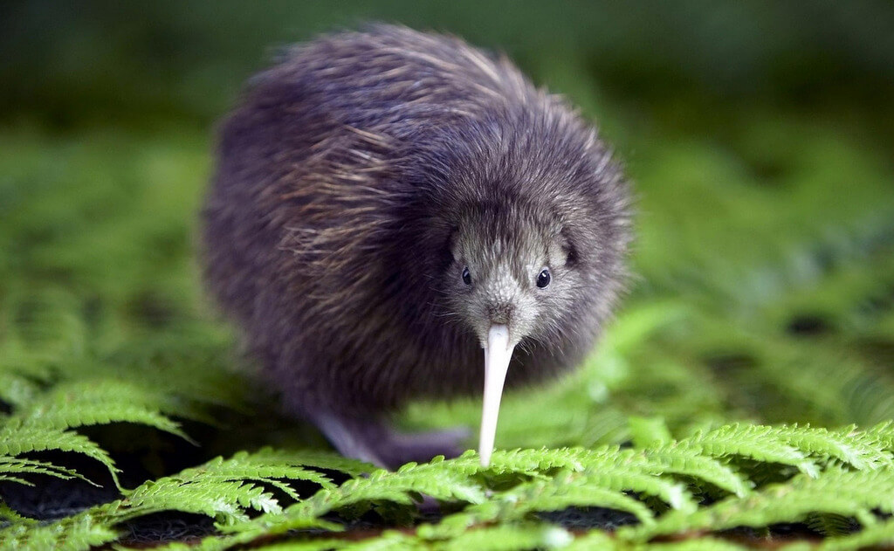
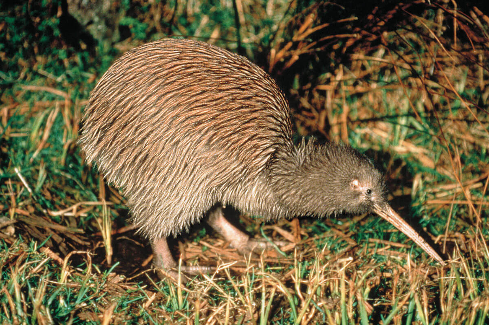
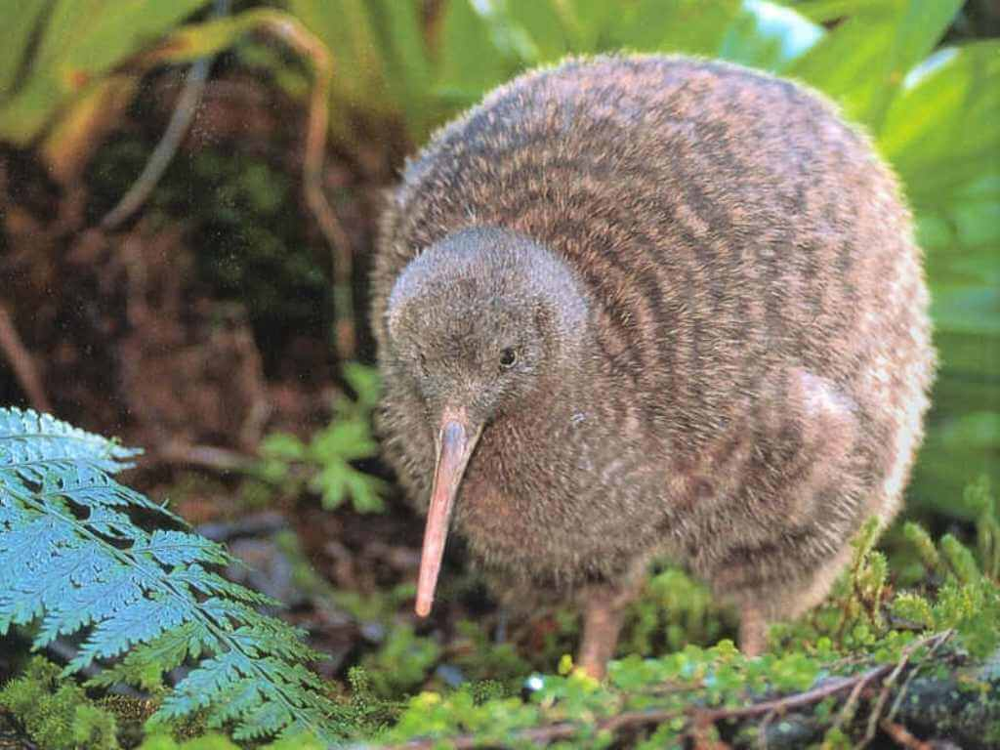
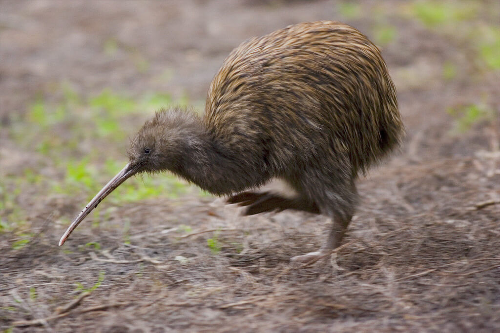
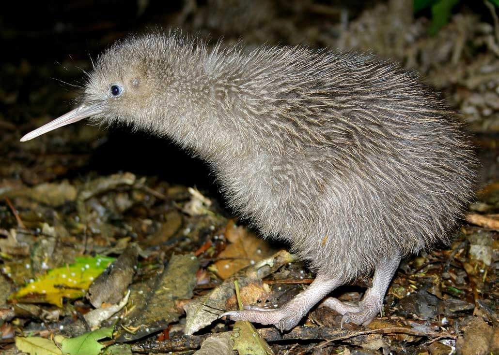
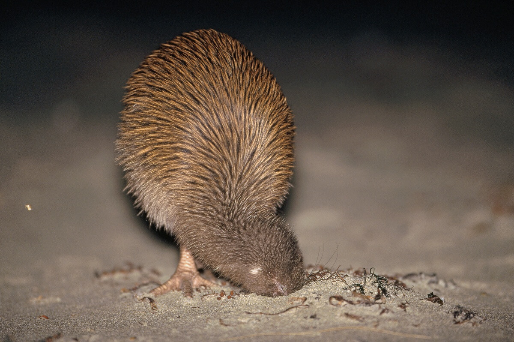
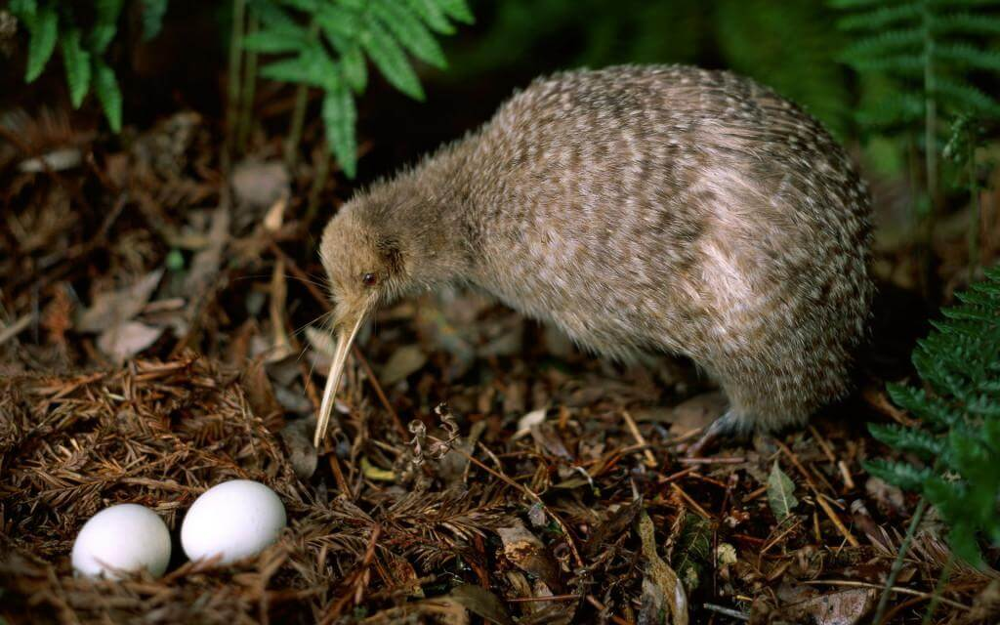
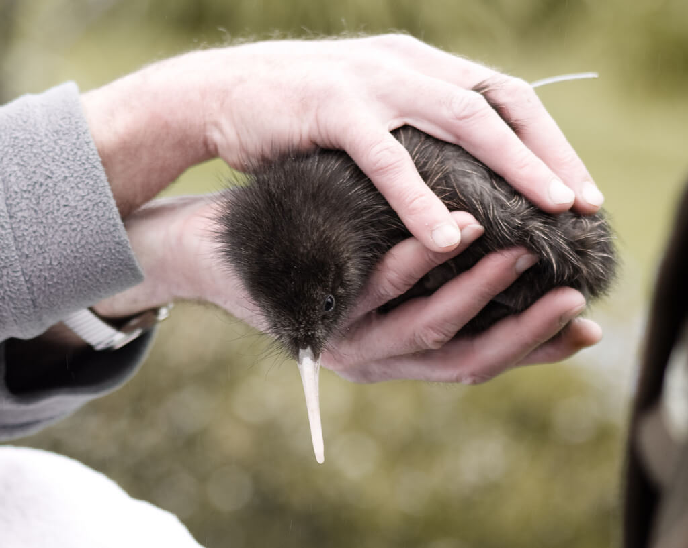
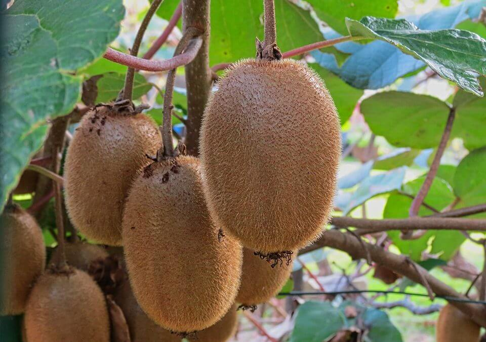

Это неофициальный, но очень популярный символ страны. Именно в честь птицы киви был назван местный фрукт, известный во всем мире.
Кроме того, сами новозеландцы часто называют себя «киви». Это стало настоящим международным прозвищем.

Киви – это красивые птицы, обитающие в Новой Зеландии, особенностью которых является отсутствие полноценных крыльев и наличие перьевого покрова, напоминающего шерсть.
Размеры такой взрослой птички очень небольшие, не более размеров обычной курицы. Для киви характерным является половой диморфизм, а самки всегда заметно крупнее, чем самцы. Тело птицы грушевидной формы. Голова небольшая, расположенная на коротковатой шее. Средний вес тела взрослой особи может варьироваться в пределах 1,4-4,0 кг.

Длина крыльев не превышает 50 мм, поэтому они практически незаметны под хорошо развитым оперением. Тем не менее, киви сохранили птичью привычку, и в процессе отдыха прячут свой клюв под крыло.
Поверхность тела птицы равномерно покрыта мягкими перьями сероватого или светло-бурого цвета, больше похожими своим внешним видом на шерсть. Киви не имеют хвоста. Ноги птицы четырёхпалые, достаточно короткие и очень сильные, снабженные острыми коготками. Скелет представлен тяжелым костяком.
Ноздри у киви открываются на конечной части клюва, в то время как у других видов птиц они располагаются у самого основания клюва.

На протяжении дневных часов, киви стараются прятаться в специально вырытых норах, дуплах или под поверхностными корнями растений. Например, большой серый киви способен вырывать нору, которая представляет собой самый настоящий лабиринт, обладающий сразу несколькими выходами и входами. На своём территориальном участке взрослая особь часто имеет порядка пяти десятков убежищ, которые ежедневно меняются.
Вырытая нора занимается птицей только спустя несколько недель после обустройства. За такой временной промежуток очень хорошо разрастается мшистая и травянистая растительность, которая служит отличной маскировкой для входа в убежище. Иногда киви очень тщательно маскирует своё гнездо, специально прикрывая входную часть листвой и собранными веточками.
В дневные часы птица способна покидать своё убежище исключительно в случае приближающейся опасности. Ночью птица невероятно подвижна, поэтому успевает обойти площадь всего своего участка.

Скрытная и очень робкая в дневные часы птица, с наступлением ночи становится достаточно агрессивной. Киви относится к категории территориальных птиц, поэтому брачной парой, а в особенности самцом, осуществляется яростная защита своего гнездового участка от любых конкурирующих особей.
Тем не менее, очень серьёзные и кровопролитные схватки между взрослыми киви происходят достаточно редко, а для охраны границ участка птицы предпочитают использовать громкий крик, хорошо слышный на расстоянии нескольких километров.

Охотиться киви предпочитает ночью, поэтому на поиски добычи такая птица выходит из своего укрытия примерно через полчаса, после того, как солнце опустится за горизонт. Основу рациона питания представителей Арtеryх составляют разнообразные насекомые и черви, а также любые моллюски, мелкие амфибии и не слишком крупные ракообразные.
Добыча выискивается киви при помощи прекрасно развитого обоняния и хорошего осязания, а пищу такая птица способна легко учуять, воткнув свой длинный клюв вглубь почвы.

Самкой киви откладывается одно или пара яиц в заранее обустроенной норке или под корневой системой растлений. В период вынашивания яйцекладки самка способна употреблять примерно в два-три раза больше кормов, чем вне брачного периода.
На протяжении первых полутора месяцев птенцы киви кормятся исключительно в дневные часы, и только потом переходят на ночной, обычный для этого вида птиц, образ жизни.

Эти птицы ведут скрытый образ жизни, поэтому встретить их в дикой природе сложно. Данная популяция считается уязвимой в основном из-за ввезённых на острова кошек и собак, которые охотятся на этих уникальных птиц. В настоящее время насчитывается не более 27 тыс. взрослых особей. Птица киви является национальным символом Новой Зеландии. Её изображают на национальной валюте, спортивной форме, дорожных знаках, талисманах.

Киви получила такое название благодаря звукам, которые она издает. В предрассветные часы взрослые птицы переговариваются друг с другом посредством громкого крика «кии-ви-кии-ви». В честь этой птицы назвали мохнатый коричневый фрукт «киви», внешне схожий с новозеландским пернатым.

ВВЕРХ